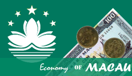

Economy of Macau
| Currency | Macanese pataca (MOP); Hong Kong dollar (HKD, unofficial)[1][2][3] |
|---|---|
| calendar year | |
Trade organisations | WTO, One Belt One Road, Boao Forum, The Forum for Economic and Trade Co-operation between China and Portuguese-speaking Countries ( Macao) and ICC etc. |
Country group | |
| Statistics | |
| Population | |
| GDP | |
| GDP rank | |
GDP growth | |
GDP per capita | |
GDP per capita rank | |
GDP by sector |
|
| 3.005% (2018)[7] | |
Population below poverty line | NA[9] |
| 35 medium (2013)[9] | |
Labour force | |
Labour force by occupation |
|
| Unemployment | |
Main industries | tourism, gambling, clothing, textiles, electronics, footwear, toys |
| External | |
| Exports | $1.45 billion (2018 est.) [14] |
Export goods | clothing, textiles, footwear, toys, electronics, machinery and parts |
Main export partners | |
| Imports | $11.55 billion (2016 est.)[9] |
Import goods | raw materials and semi-manufactured goods, consumer goods (foodstuffs, beverages, tobacco, garments and footwear, motor vehicles), capital goods, mineral fuels and oils |
Main import partners |
|
FDI stock | |
Gross external debt | |
| Public finances | |
| Revenues | 14.71 billion (2017 est.)[9] |
| Expenses | 9.684 billion (2017 est.)[9] |
All values, unless otherwise stated, are in US dollars. | |
.jpeg){kind=link}
The economy of Macau is a highly developed market economy. Macau's economy has remained one of the most open in the world since its handover to China in 1999. Apparel exports and gambling-related tourism are mainstays of the economy. Since Macau has little arable land and few natural resources, it depends on mainland China for most of its food, fresh water, and energy imports. Japan and Hong Kong are the main suppliers of raw materials and capital goods. Although Macau was hit hard by the 1997–98 Asian financial crisis and the early 2000s recession, its economy grew approximately 13.1% annually on average between 2001 and 2006.[15] Macau is a full Member of the World Trade Organization.[16] Public security has greatly improved after handover to the People's Republic of China.[17] With the tax revenue from the profitable gambling industry, the Macau government is able to introduce the social welfare program of 15 years of free education to all Macau citizens.[18] In 2015, Macau's economy saw a sharp decrease (-26.4% year-on-year in Q2 2015) due to the reduced spending by visitors from Mainland China since the Anti-corruption campaign under Xi Jinping.[19]
During the first three-quarters of 2007, Macau registered year-on-year GDP increases of 31.4%.[15] A rapid rise in the number of mainland visitors due to China's easing of travel restrictions, increased public works expenditures, and significant investment inflows associated with the liberalisation of Macau's gaming industry drove the five-year recovery. The budget also returned to surplus after 2002 because of the surge in visitors from China and a hike in taxes on gambling profits, which generated about 70% of government revenue. The Hong Kong dollar is itself a reserve currency for the Macanese pataca, which is pegged at the official rate of around 1 Hong Kong dollar to 1.03 Macanese pataca.[20]
History
[edit]Macau was a barren fishing village with a population of about 400 before the Portuguese arrived in the 16th century, during the Age of Discovery.[21] In 1535, the Portuguese traders obtained by bribing the right to anchor ships in Macau harbours and engage in trading activities. Portuguese and Chinese merchants flocked to Macau, and it quickly became an important regional trading center in Portugal's lucrative trade along three major routes: Macau-Malacca-Goa-Lisbon, Guangzhou-Macau-Nagasaki and Macau-Manila-Mexico.[22] However, with the decline of Portugal as a world power in the 17th and 18th centuries, the trading routes were challenged by other powers such as the Dutch and the British. After China ceded Hong Kong to the British in 1842, Macau's position as a major regional trading center declined further still because larger ships were drawn to the deep water port of Victoria Harbour. In an attempt to reverse the decline, from 1848 to the early 1870s Macau engaged in the infamous trade of coolies (slave labourers) as a transit port, shipping locals from southern China to Cuba, Peru, and other South American ports to work on plantations or in mines.[22]
Fishing re-emerged as a dominant economic activity in Macau as it lost its position as a regional trading center. In the early 1920s, over 70% of Macau's 84,000 residents were engaged in fishing.[21] Meanwhile, some other businesses started to develop, such as matches, firecrackers, incense and fishing-boat building. But the most notable was the gambling business. Gambling was first legalised in the 19th century in an attempt to generate revenues for the government. The first casino monopoly concession was granted to the Tai Xing Company in 1937.[23] The company was, however, too conservative to fully exploit the economic potential of gambling. The industry saw a major breakthrough in 1962 when the government granted the Sociedade de Turismo e Diversoes de Macau (STDM), a syndicate jointly formed by Hong Kong and Macau businessmen, the monopoly rights to all forms of gambling. The STDM introduced western-style games and modernised the marine transport between Macau and Hong Kong, bringing millions of gamblers from Hong Kong every year.[21]
In the 1970s Macau also saw a rapid development in its manufacturing sector. With Macau's low-cost operating environment and its surplus quotas under the Multi Fiber Arrangement (MFA), many Hong Kong industrialists established textile and garment manufacturing bases in Macau. At its golden age in the 1980s, the manufacturing sector accounted for about 40% of Macau's GDP; textiles and garments accounted for about 90% of Macau's total visible exports.[21] However, the manufacturing sector has experienced a gradual decline since the early 1990s due to phasing out of the MFA quota system and the rising labour costs relative to mainland China and Southeast Asian countries.
| Economy of Macau |
|---|
|  |
| Currency and identity |
| Resources |
| Companies |
| Other Macau topics |
{kind=link}
Labor and employment
[edit]| Employed population by occupation 2007[24] | ||
|---|---|---|
| Occupation | No. in thousands | |
| Senior officials/managers | 14.6 | |
| Professionals | 9.9 | |
| Technicians | 28.1 | |
| Clerks | 83.7 | |
| Service & sale workers | 63.2 | |
| Workers in agriculture/fishery | 0.8 | |
| Craft & similar workers | 33.7 | |
The work force in Macau is mainly composed of manufacturing; construction; wholesale and retail; hotels and restaurants; financial services, real estate, and other business activities; public administration and other personal and social services, including gaming; transport, storage and communications. Due to the double-digit economic growth in recent years, the unemployment rate dropped from the record high 6.8% in 2000 to 3.1% in Qtr 3, 2007.[25]
With the opening of several casino resorts and other major constructions underway, it is reported that many sectors, especially the construction sector, experience a shortage of labour. The government responds by importing labour from other neighbouring regions, including mainland China, Hong Kong, the Philippines and India. Currently the number of imported labours stands at a record high of 75,391 (Q2 2007), representing more than a quarter of the labour force in Macau.[26][27] Some local workers complain about the lack of jobs due to the influx of cheap imported labour. Some also claim that the problem of illegal labour is severe.[28] Another concern is the widening of income inequality in the region: Macau's Gini coefficient, a popular measure of income inequality where a low value indicates a more equal income distribution, rises from 0.43 in 1998 to 0.48 in 2006. It is higher than those of other neighbouring regions, such as mainland China (0.447), South Korea (0.316) and Singapore (0.425).[29]
The monetary system
[edit]{kind=link}
Macau adopts the so-called currency board system under which the legal tender, pataca (MOP), is 100 percent backed by foreign exchange reserves, the Hong Kong dollar (HKD). Moreover, the currency board, Monetary Authority of Macao (AMCM), has a statutory obligation to issue and redeem pataca on demand against Hong Kong dollar at a fixed exchange rate and without limit. The pataca is pegged to the Hong Kong dollar at a rate of 1.03 MOP per HKD, which is maintained by the AMCM.[30]
Each pataca divides into 100 avos. Coins are issued in 10, 20, and 50 avos and 1, 2, 5, and 10 patacas (2 and 10 patacas coins are rarely used in the territory); notes are in 5, 10, 20, 50, 100, 500, and 1000 pataca denominations. Hong Kong dollar is freely used and accounts for more than half of the total deposits in Macau's banks.[31] In addition, Chinese yuan is also widely accepted. Two banks issue currency: the Banco Nacional Ultramarino and the Bank of China (starting from October 1995). The historical exchange rates between the pataca and the US dollar (USD) are given below.
| MOP per USD | Period |
|---|---|
| 8.01 | 2000 |
| 7.99 | 1999 |
| 7.98 | 1998 |
| 7.99 | 1997 |
| 7.962 | 1996 |
| 8.034 | 1993–95 |
Trade
[edit]In 2003, China's Ministry of Commerce established Forum Macao in 2003.[32]: 62 The Forum's objective is to increase economic ties between China and the Portuguese-speaking countries.[33] Its permanent secretariat is located in Macau.[32]: 62–63
In 2011, Macau's market economy produced total exports of US$1.119 billion (MOP 8.94 billion) and consisted mainly of clothing, textiles, footwear, toys, electronics, machinery and parts. Total imports for the same period reached US$8.926 billion (MOP 71.32 billion), and consisted mostly of raw materials and semi-manufactured goods, consumer goods (foodstuffs, beverages, tobacco), capital goods, mineral fuels and oils. Macau's primary export partner in 2011 was Hong Kong (44.6%). Other exports go to Mainland China (15.9%) and United States (7.9%). Macau import partners are Mainland China (30.4%), Hong Kong (12%), France (10.4%), Switzerland (7.5%), Italy (7.5%), Japan (6.2%), and United States (6.1%).
In the second half of the 20th century, Macau's economy was diversified with the development of light industry, the influx of migrants from mainland China to serve as a labor force, and increased tourism. Portugal's efforts to develop economic and cultural links between Macau and Brazil and Portuguese holdings in Africa, however, were not successful. Economic ties to the European Union and Taiwan are considered important aspects of Macau's economic role as part of the People's Republic of China. Direct access to the neighbouring Zhuhai Special Economic Zone facilitates trade with mainland China. As a special administrative region, Macau functions as a free port and as a separate customs territory.
Sectors
[edit]Tourism and gambling
[edit]{kind=link}
| Visitor arrivals by place of residence in 2006[34] | |
|---|---|
| Place of residence | No. of visitor arrivals (in thousands) |
| Mainland China | 11,985.6 |
| Hong Kong | 6,940.7 |
| Taiwan (ROC) | 1,437.8 |
| Southeast Asia | 693.4 |
| Total | 21,998.1 |
Tourism is the backbone of Macau's economy, and much of it geared towards gambling, which was legalised in the 19th century and has since been the linchpin of the economy and an important source of revenue for the government. As of at least 2015, 90% of tourist revenues in Macau are derived from gambling.[35]: 22 For the Macau government, taxes derived from the table game of baccarat are the largest single source of public funds.[35]: 22
From 1962, the gambling industry operated under a government-issued monopoly licence by Stanley Ho's Sociedade de Turismo e Diversões de Macau (STDM), which replaced the Tai Heng Entertainment Corporation that had held a gaming monopoly for the previous 24 years.[23] The monopoly ended in 2001 when the gaming industry was liberalised and several casino operators from Las Vegas entered the market. These new operators include Las Vegas Sands, which opened Sands Macao, the largest casino in the world as measured by total number of table games, in 2004[36] and Venetian Macau in 2007; Wynn Resorts, which opened Wynn Macau in 2006; and MGM Mirage, which opened MGM Grand Macau in 2007.
In addition, other casino owners, including Australian Crown Casino and Hong Kong Galaxy Entertainment Group have also opened several hotel casinos in Macau. As a result of the surge in number of casinos and construction from other new casino entrants, Macau's economy has grown rapidly, and gambling revenues from Macau's casinos are now greater than those of Las Vegas Strip,[37] making Macau the highest-volume gambling center in the world.[38] Numerous other hotel casinos, including Galaxy Cotai Megaresort and Ponte 16, are also to be opened in near future.
{kind=link}
{kind=link}
Due to the opening of the new hotel casinos and China's easing of travel restrictions, there has been a rapid rise in the number of mainland visitors. From 9.1 million visitors in 2000, arrivals to Macau has grown to 18.7 million visitors in 2005 and 22 million visitors in 2006, with over 50% of the arrivals coming from mainland China and another 30% from Hong Kong.[34] Macau is expected to receive between 24 and 25 million visitors in 2007.[39] Macau also received the Future Award 2007, voted by 26,000 German travel trade members of GoAsia, for being regarded as the most promising future tourism destination in Asia.[40] Macau is currently rated as one of the world's top tourism destinations by the World Tourism Organization.[41]
Because Macau benefits from favorable taxation rules, it is a favored location for tourists from elsewhere in China to purchase luxury goods like cosmetics, jewelry, and designer fashion goods.[35]: 116
Manufacturing
[edit]Macau's manufacturing industries emerged in the first few decades of the 20th century, which mainly consisted of junk building, factories for matches, firecrackers and incense. Modern industries, however, did not take off until the 1970s when the textiles and garments industry was rising rapidly, while other light industries such as plastics, electronics, toys, and artificial flowers also experienced respectable growth. Textiles and garments further increased its dominance in the manufacturing sector towards the end of the 1980s.
Much of Macau's textile industry has moved to the mainland as the Multi-Fiber Agreement is phased out. The territory has relied more on gambling and tourism-related services to generate growth.
Banking
[edit]Macau is an offshore financial centre, a tax haven, and a free port with no foreign exchange control regimes.[42] [43][44] The offshore finance business is regulated and supervised by the Monetary Authority of Macao,[45] while the regulation and supervision of the offshore non-finance business is mainly controlled by the Macau Trade and Investment Promotion Institute.[46] In 2007, Moody's Investors Service upgraded Macau's foreign and local currency government issuer ratings to 'Aa3' from 'A1', citing its government's solid finances as a large net creditor. The rating agency also upgraded Macau's foreign currency bank deposit ceiling to 'Aa3' from 'A1'.[47]
There are twenty other licensed banks, sixteen of which are foreign. Macau has five of the top 500 commercial banks in Asia, including Banco Tai Fung and Industrial and Commercial Bank of China.
Construction
[edit].JPG){kind=link}
In 2014, the construction sectors in Macau engaged 45,368 people. The value of construction was MOP78.15 billion, in which MOP66.88 billion belong to the private sectors. The intermediate consumption was MOP61.03 billion and labor cost was MOP11.35 billion.[48]
Transportation companies
[edit]Air Macau is Macau's Flag carrier and is based out of Macau International Airport.[49]
Media
[edit]Macau has reportedly the highest "media density" in the world - nine Chinese-language dailies, three Portuguese-language dailies, two English-language dailies and about half a dozen Chinese-language weeklies and one Portuguese-language weekly. About two dozen newspapers from Hong Kong, mainland China, Taiwan and the Philippines are shipped to Macau every early morning.
Economic diversification
[edit]The large role of gambling and tourism underscores a degree of risk for Macau's economy. Because the economy is so reliant on tourism and gambling for its well-being, if the flow of tourists slows, it could come as a shock to the small market. The push for diversification came in the closing years of Portuguese administration, under Governor General Vasco Rocha Vieira, and has continued to the present, under Chief Executive Edmund Ho. The government is seeking foreign investment as a means of economic diversification as well. Much of the foreign investment into Macau, however, has gone into the gaming sector after the end of the monopoly in 2001. Otherwise, foreign companies have entered into the mobile phone market and internet services after telecommunications market liberalisation in 2001.
Political economy and social welfare
[edit]Prior to the 1930s Macau had a Laissez-Faire type of welfare provision. Publicly funded schools available were taught in Portuguese.[50] The first welfare program was created in the late 1930s – it was called the Public Charity Society. The main objective of the organization is to provide for the poor and orphans.[51] The development of a welfare state was gradual and primitive. In 1947, a number of reforms were made. Most notably, the social relief card was established which was only given to those in need. In the 60s the Public Relief Society became the Public Relief Branch. Services broaden to cover other areas such as disaster relief. This is an important addition because Macau have high risks of frequent typhoons. In addition, many facilities were also built, including rehabilitation centers and center for blind and deaf assistance. Throughout the 60s and 70s, housing was provided to the poor, disabled and elderly. Financial aid for health care and education is also provided to poor.[52] During this period the government have also started subsidizing private schools.[53] Another restructuring of the system happened in 1980. The Department of Social Welfare was officially established. Further adjustments were made in the late 80s that separated the department into three branches, including the Macao Governor, Social Welfare Committee and the Department for Social Welfare. It established four principles "equality, efficiency, mutual assistance and participation". Four offices were also set up in Santo António e São Lázaro, São Lourenço e Sé, Nossa Senhora de Fátima, and Ilias. The purpose of these offices is to make it more convenient for people to make a visit and for the workers to also get closer to the locals in their region. In the 90s, an additional office was set up in llhas Verde due to high demand in the Northern region. The department also became increasingly involved in familial issues by offering counseling.[54]
The Social Welfare Bureau – which remained to this day - was established after the handover to China in 1999. Initially Macau faced challenges from a weak economy and high unemployment rate but in 2002, gaming was legalized and increased the government revenue. Due to the rapid economic growth driven by the gambling industry, foreign investments and tourism, the government is now able to provide more public services.[55] Macau's social welfare programs have grown to be comparable to the most developed countries in the world. Free healthcare is universal and offered in public hospitals but private services is also subsidized by 30%, for pregnant women, students, civil servants and people 65 and above, it is completely subsidized. The government extend benefits for many of these citizens.[56] Improvements in the rise of employment and income is also linked to higher satisfaction with quality of life.[57] The government provide 15 years of free education, social insurance and social assistance to all citizens. Similar to a lot of East Asian countries, the social welfare model in Macau does not fit neatly in "the three worlds of welfare capitalism". It has been argued that it functions more like a regulatory welfare regime.[58]
Nevertheless, Macau's public sector appears to be quite small. Workers in the public sector is one of the highest paid occupation due to constitutional law that was set during the handover. Therefore, as a result the government often offer short-term or part-time contracts to make it more affordable although contracts usually get renew.[59] It is reported that many workers in the police force have left to work in casinos for better pay. Economic growth also brings inequality, competition is getting higher as more foreigner and mainland workers are overtaking local poor in skills. This evidently produced an increase in citizen participation in elections and protests.[60] The focus on the gambling and tourism industry also come at the expense of other sectors. As of 2009, 44.9% of labor work in the tourist industry. It is reported in 2006 that 44 times the population of Macau visited the city that year. Furthermore, all profitable big business like hotels and casinos are owned by foreign investors, which comes at the expense of local family businesses. This had led to a violent protest on Labor Day in 2007. No such civil unrest has ever been record in Macau history before or after the handover but it caught real attention because the city had a GDP growth of 17% the year prior.[61]
Energy
[edit]{kind=link}
Electricity – production: 1.893 billion kWh (2004)
fossil fuel: 100%
hydro: 0%
nuclear: 0%
other: 0% (1998)
Electricity – consumption: 1.899 billion kWh (2004)
Electricity – exports: 0 kWh (2004)
Electricity – imports: 153.3 million kWh (2004)
See also
[edit]References
[edit]- ^ Chan, S. S. (2000). The Macau Economy. Publications Centre, University of Macau. ISBN 99937-26-03-6.
- ^ "The Basics | Fodor's Travel". Archived from the original on 24 April 2016. Retrieved 7 May 2017.
- ^ "Macau: What to use in Macau - MOP or HKD? - Tripadvisor". Archived from the original on 21 August 2018. Retrieved 7 May 2017.
- ^ "World Economic Outlook Database, April 2019". IMF.org. International Monetary Fund. Archived from the original on 17 June 2019. Retrieved 29 September 2019.
- ^ "World Bank Country and Lending Groups". datahelpdesk.worldbank.org. World Bank. Archived from the original on 28 October 2019. Retrieved 29 September 2019.
- ^ "Population, total - Macao SAR, China". data.worldbank.org. World Bank. Archived from the original on 19 October 2019. Retrieved 19 October 2019.
- ^ a b c d e f g "Report for Selected Countries and Subjects: April 2024". imf.org. International Monetary Fund.
- ^ "【內外夾擊】澳門上季經濟按年勁縮8.1%". 東網ON.CC. 東網ON.CC. 29 February 2020. Archived from the original on 8 April 2020. Retrieved 7 March 2020.
- ^ a b c d e f g h i j k l m n o "The World Factbook". CIA.gov. Central Intelligence Agency. Archived from the original on 24 January 2021. Retrieved 19 October 2019.
- ^ "Macau in Figures, 2024". 澳門統計暨普查局(DSEC). p. 4. Retrieved 8 June 2024.
- ^ "Labor force, total - Macao SAR, China". data.worldbank.org. World Bank. Archived from the original on 19 October 2019. Retrieved 6 January 2020.
- ^ "Employment to population ratio, 15+, total (%) (national estimate) - Macao SAR, China". data.worldbank.org. World Bank. Archived from the original on 19 October 2019. Retrieved 19 October 2019.
- ^ "Employment Survey". dsec.gov.mo. Statistics and Census Service. Archived from the original on 19 October 2019. Retrieved 19 October 2019.
- ^ "Macau's Top 10 Exports 2019". Archived from the original on 25 February 2020. Retrieved 19 February 2020.
- ^ a b "Economic statistics from Monetary Authority of Macao". AMCM. Archived from the original on 19 December 2012. Retrieved 23 December 2007.
- ^ "WTO | Macao, China - Member information". Archived from the original on 1 August 2015. Retrieved 1 February 2013.
- ^ "Archived copy". Archived from the original on 14 May 2013. Retrieved 13 October 2012.
{{cite web}}: CS1 maint: archived copy as title (link) - ^ "Archived copy". Archived from the original on 2 January 2020. Retrieved 28 December 2012.
{{cite web}}: CS1 maint: archived copy as title (link) - ^ "Macau economy - introduction" (PDF). Archived from the original (PDF) on 24 January 2021. Retrieved 6 January 2016.
- ^ "Archived copy" (PDF). Archived from the original (PDF) on 5 June 2013. Retrieved 5 November 2012.
{{cite web}}: CS1 maint: archived copy as title (link) - ^ a b c d Chan, S. S. (2000). The Macau Economy. Macau: Publications Centre, University of Macau. ISBN 978-99937-26-03-6.
- ^ a b Fung, Bong Yin (1999). Macau: a General Introduction (in Chinese). Hong Kong: Joint Publishing (H.K.) Co. Ltd. ISBN 978-962-04-1642-2.
- ^ a b Macau Yearbook 2007. Government Information Bureau of the Macau SAR. 2007. ISBN 978-99937-56-09-5.
- ^ "DSEC – for the current data of employed population by occupation". DSEC. Archived from the original on 24 November 2007. Retrieved 27 December 2007.
- ^ "DSEC – for the current data of unemployment rate and labor force participation rate". DSEC. Archived from the original on 2 January 2008. Retrieved 27 December 2007.
- ^ "DSEC – for data on the principal statistical indicators". DSEC. Archived from the original on 2 January 2008. Retrieved 27 December 2007.
- ^ "DSEC – for the current data of labor force and employed population". DSEC. Archived from the original on 2 January 2008. Retrieved 27 December 2007.
- ^ "Rare Macau protest turns violent". BBC News – Business. 1 May 2007. Archived from the original on 20 October 2018. Retrieved 27 December 2007.
- ^ "Profile of China: The problems behind Macau's prosperity" (in Chinese). BBC Chinese. 31 December 2007. Archived from the original on 25 September 2018. Retrieved 15 January 2008.
- ^ "The history of pataca". Monetary Authority of Macao. Archived from the original on 20 December 2012. Retrieved 4 January 2008.
- ^ Chan, 39
- ^ a b Shinn, David H.; Eisenman, Joshua (2023). China's Relations with Africa: a New Era of Strategic Engagement. New York: Columbia University Press. ISBN 978-0-231-21001-0.
- ^ Galveston, Fernanda Lacerate Pereira; et al. (November 2017). "Fact Sheet: Macao Forum for Economic and Trade Co-Operation between China and Portuguese-Speaking Countries". BRICS Policy Center. Archived from the original on 1 October 2022. Retrieved 8 September 2023.
- ^ a b "DSEC – for the current data of visitor arrivals by place of residence". DSEC. Retrieved 8 January 2008.[permanent dead link]
- ^ a b c Simpson, Tim (2023). Betting on Macau: Casino Capitalism and China's Consumer Revolution. Globalization and Community series. Minneapolis: University of Minnesota Press. ISBN 978-1-5179-0031-1.
- ^ Richard N. Velotta and Jeff Simpson. "Las Vegas gaming operations are building Chinese resort town". Las Vegas Sun. Archived from the original on 16 October 2006. Retrieved 2 November 2006.
- ^ "Macau, a tiny special administrative region of China, appears to have overtaken the famous Las Vegas Strip as the world's top gambling destination". BBC News – Business. 25 October 2006. Archived from the original on 25 September 2018. Retrieved 28 December 2007.
- ^ David Barboza. "Asian Rival Moves Past Las Vegas". The New York Times. Archived from the original on 27 January 2007. Retrieved 24 January 2007.
- ^ "Macau expected to receive between 24 and 25 million tourists in 2007". MacauHub. Archived from the original on 9 October 2007. Retrieved 15 March 2007.
- ^ Theodore Koumelis. "German travel trade give most promising destination award to Macau". Travel Daily News. Archived from the original on 26 September 2007. Retrieved 15 March 2007.
- ^ "World's Top Tourism Destinations (absolute no.) – Top 25" (PDF). The Organisation of World Tourism. Archived from World's Top Tourism Destinations the original on 8 August 2007. Retrieved 15 November 2007.
{{cite web}}: Check|url=value (help) - ^ Luis Pereira. "Offshore Operation in Macao". Macau Business. Archived from the original on 27 September 2007. Retrieved 5 September 2007.
- ^ Errico and Musalem (1999). "Countries, Territories, and Jurisdictions with Offshore Financial Centers". IMF. Archived from the original on 10 August 2006. Retrieved 5 September 2006.
{{cite web}}: CS1 maint: numeric names: authors list (link) - ^ "Macau Currency". AsiaRooms.com. Archived from the original on 12 January 2008. Retrieved 2 January 2008.
{{cite web}}: CS1 maint: unfit URL (link) - ^ "The homepage of Monetary Authority of Macao". The Monetary Authority of Macao, the Govt. of Macau SAR. Archived from the original on 1 June 2007. Retrieved 15 November 2007.
- ^ "The Macau Trade and Investment Promotion Institute". The Macau Trade and Investment Promotion Institute, the Govt. of Macau SAR. Archived from IPIM the original on 7 November 2007. Retrieved 15 November 2007.
{{cite web}}: Check|url=value (help) - ^ "the web site of Hemscott and Empowering Inverstors". Hemscott.com. Archived from the original on 27 September 2007. Retrieved 15 November 2007.
- ^ MACAULINK. "Macau News - Macau construction sector boots local economy". Macau News. Archived from the original on 4 March 2016. Retrieved 7 October 2015.
- ^ "Contact Us Service Archived 25 March 2010 at the Wayback Machine." Air Macau. Retrieved on 23 September 2009.
- ^ Hui, Samuel; Aspalter, Christian; Lai, Dicky (23 March 2012). "Social Welfare in Macau - Between East and West: A Comparative, Analytical Welfare Regime Perspective". doi:10.2139/ssrn.2027764. S2CID 150874326.
{{cite journal}}: Cite journal requires|journal=(help) - ^ ". "Development History." Social Welfare Bureau of MSAR Government". Instituto De Accao social. Archived from the original on 31 May 2019. Retrieved 8 December 2017.
- ^ ""Development History." Social Welfare Bureau of MSAR Government". Instituto De Accao social. Archived from the original on 31 May 2019. Retrieved 8 December 2017.
- ^ Hui, Samuel; Aspalter, Christian; Lai, Dicky (23 March 2012). "Social Welfare in Macau – Between East and West: A Comparative, Analytical Welfare Regime Perspective". doi:10.2139/ssrn.2027764. S2CID 150874326.
{{cite journal}}: Cite journal requires|journal=(help) - ^ ""Development History." Social Welfare Bureau of MSAR Government". Instituto De Accao social. Archived from the original on 31 May 2019. Retrieved 8 December 2017.
- ^ Chan, Kam Wah; Lee, James (2011). "A 'Flexible' Strategy?". Social Welfare Policy: A 'Flexible' Strategy?. Hong Kong University Press. pp. 197–214. ISBN 9789888083282. JSTOR j.ctt1xwg2h.20.
- ^ Ferrao, Silvia O. S.; Gaspar, Elisa Lei (2013). "Public healthcare system in Macao". 2013 IEEE 2nd International Conference on Serious Games and Applications for Health (SeGAH). pp. 1–8. doi:10.1109/SeGAH.2013.6665312. ISBN 978-1-4673-6165-1. S2CID 14875937.
- ^ Scott, Ian (2011). "Social Stability and Economic Growth". Gaming, Governance and Public Policy in Macao: 1–16. ISBN 9789888083282. JSTOR j.ctt1xwg2h.8.
- ^ Lai, Dicky Wai Leung (2014). "Macao's welfare model: An extreme world of welfare capitalism?". International Social Work. 57 (6): 676–687. doi:10.1177/0020872812452176. S2CID 143637023.
- ^ Chou, Bill K.P. (1 October 2016). "Public Sector Reform in Macao After the Handover". China Perspectives.
- ^ Edmonds, Richard (2008). "Political Change in Macao. Lo Sonny Shiu-Hing. London and New York: Routledge, 2008. xvi + 166 pp. £75.00. ISBN 978-0-415-39577-9". The China Quarterly. 195: 708–710. doi:10.1017/S0305741008001008. S2CID 153421849.
- ^ Sheng, Li; Tsui, Yanming (1 October 2009). "A general equilibrium approach to tourism and welfare: The case of Macao". Habitat International. 33 (4): 419–424. doi:10.1016/j.habitatint.2009.01.002.
Notes
[edit]- ^ The UN does not calculate the HDI of Macau. The government of Macau calculates its own HDI.
- ^ the Fiscal Reserves Act that came into force on 1 January 2012 requires the fiscal reserves to be separated from the foreign exchange reserves and to be managed separately; the transfer of assets took place in February 2012
Further reading
[edit]- Chan, S. S. (2000). The Macau Economy. Publications Centre, University of Macau. ISBN 978-99937-26-03-6.
- Fung, Bong Yin (1999). Macau: a General Introduction (in Chinese). Joint Publishing (H.K.) Co. Ltd. ISBN 978-962-04-1642-2.
- Gunn, Geoffrey C. (1996). Encountering Macau, A Portuguese City-State on the Periphery of China, 1557–1999. Westview Press. ISBN 0-8133-8970-4.
| Sovereign states |
|
|---|---|
| States with limited recognition | |
| Dependencies and other territories | |